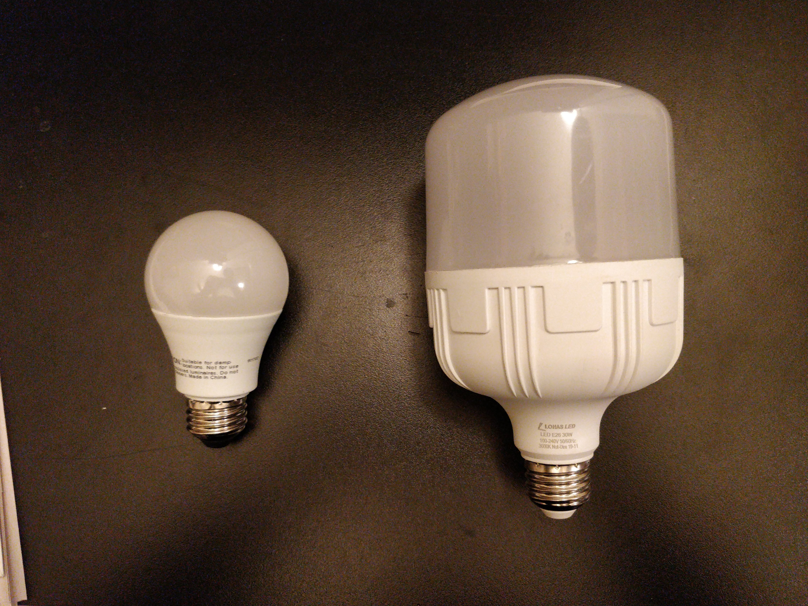
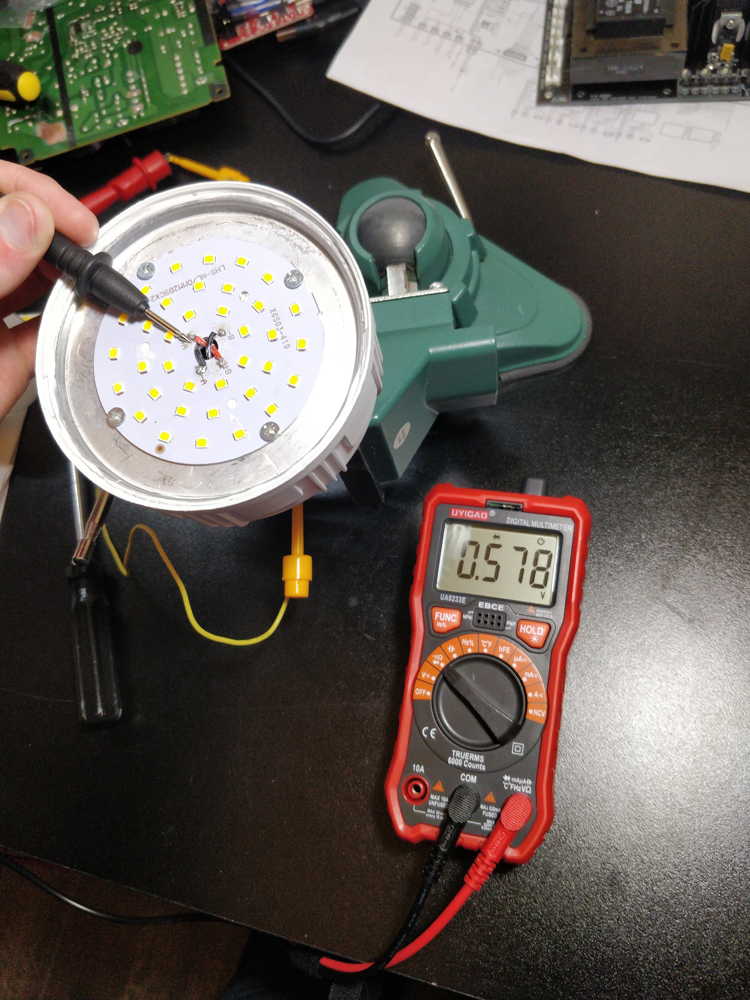
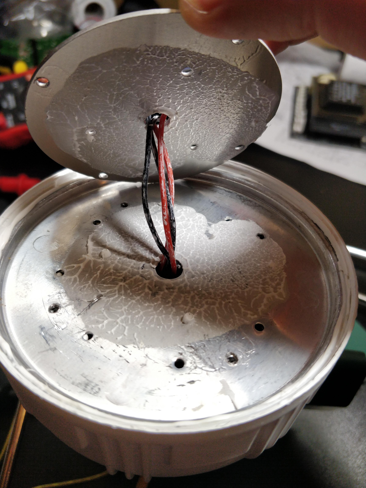
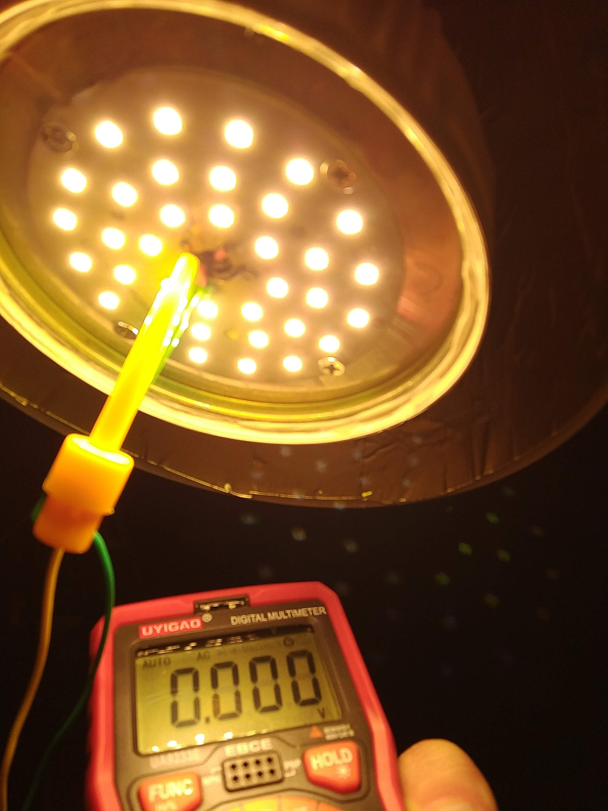
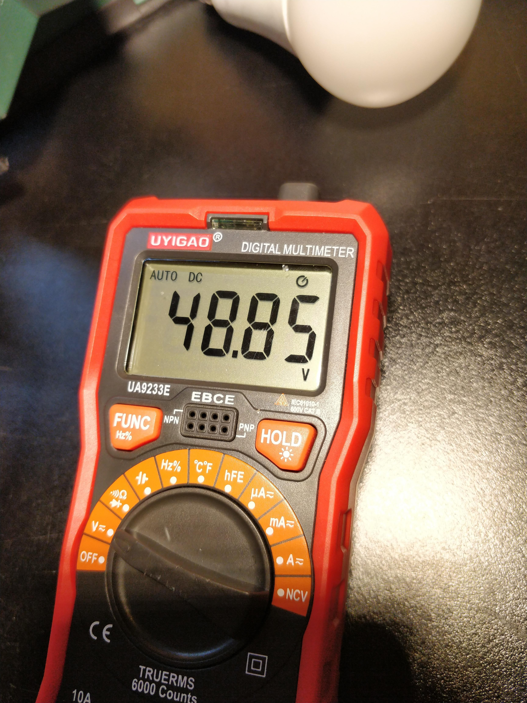
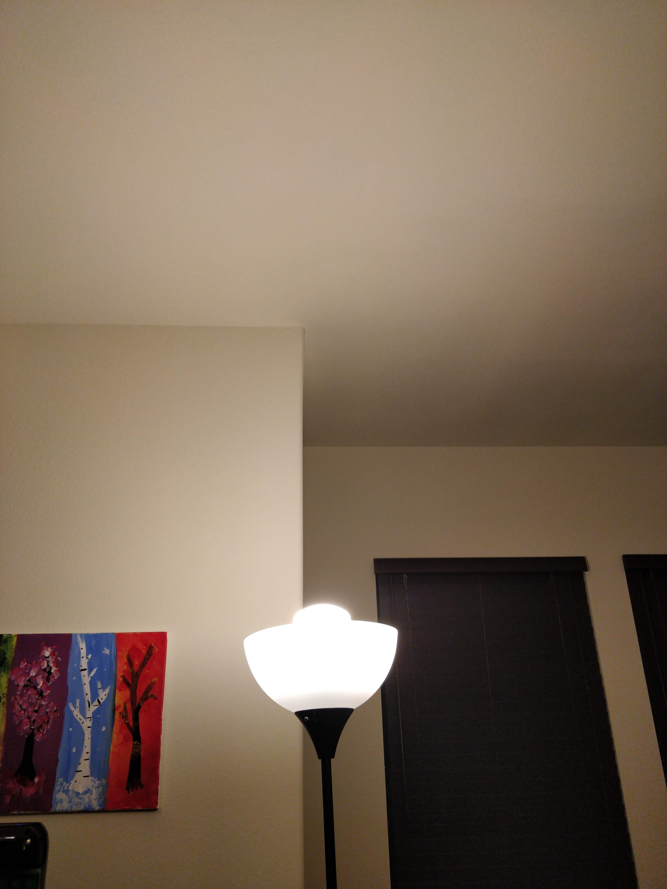
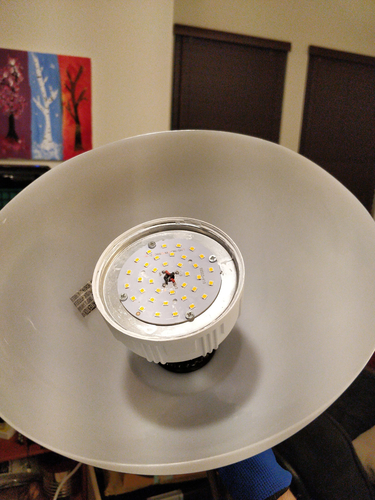
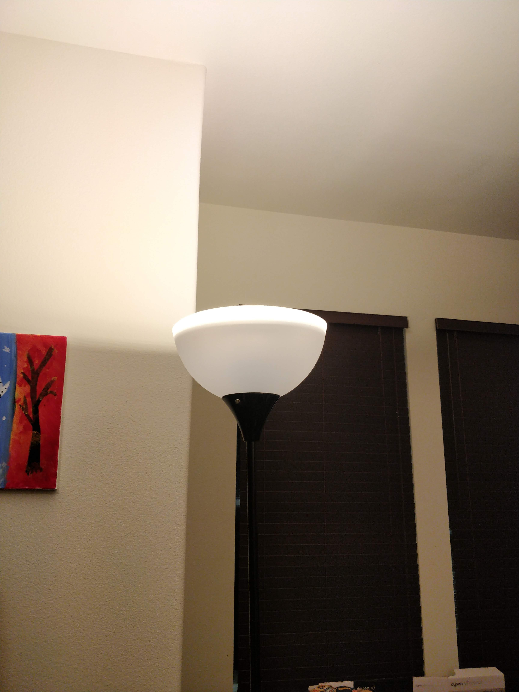

Back to homepage
Back to blog main page
I got
this LED on amazon
for my living room, because I want more light, but I don't want to have to bother with turning on a bunch of light fixtures individually.
It is much bigger than a standard LED bulb:

Removing the cover reveals a large number of LED chips. Here I measure a 0.5V drop between an input wire and the socket, which doesn't bode well for the quality of the LED driver here.
Underneath the PCB there is a satisfying quantity of thermal compound. That's right, not glue, it appears to be real thermal compound.


The power supply seems OK, though, as it is doing just fine. There is no measurable AC ripple, and the DC voltage of 48.85V (which changed slightly as it heated up) suggests it is powered by a good constant-current LED driver.


The LEDs appear to be run in parallel in 4 legs, and there are 36 of them, so that comes to 9 LEDs per leg. At 48V per leg that is 5.33V per LED. Brief google research shows that 5.3V LEDs are a thing, so I am somewhat confident in this logic.
Lastly, this is why I had to take off the cover in the first place. To not be blinded by the top of the light every time I glance in that direction.



It is clearly less well diffused now, but I am ok with that (for now).